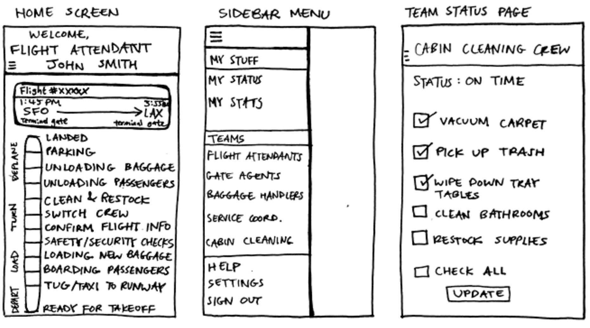
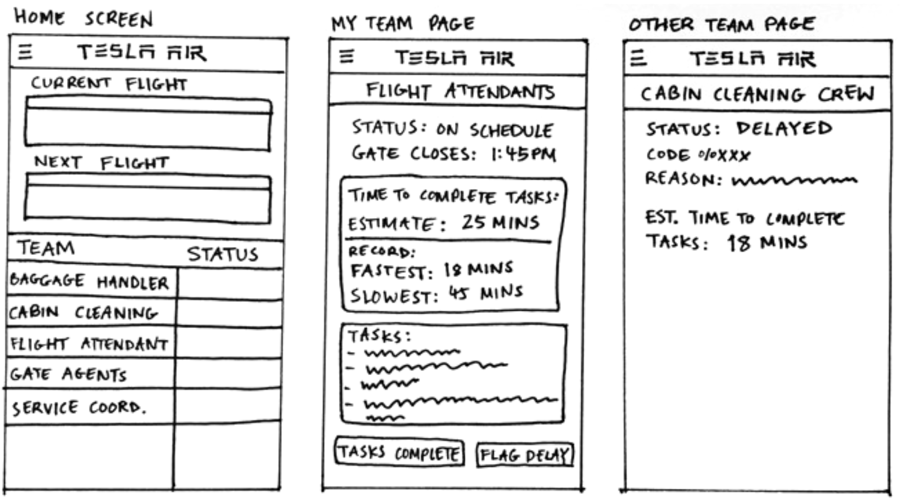
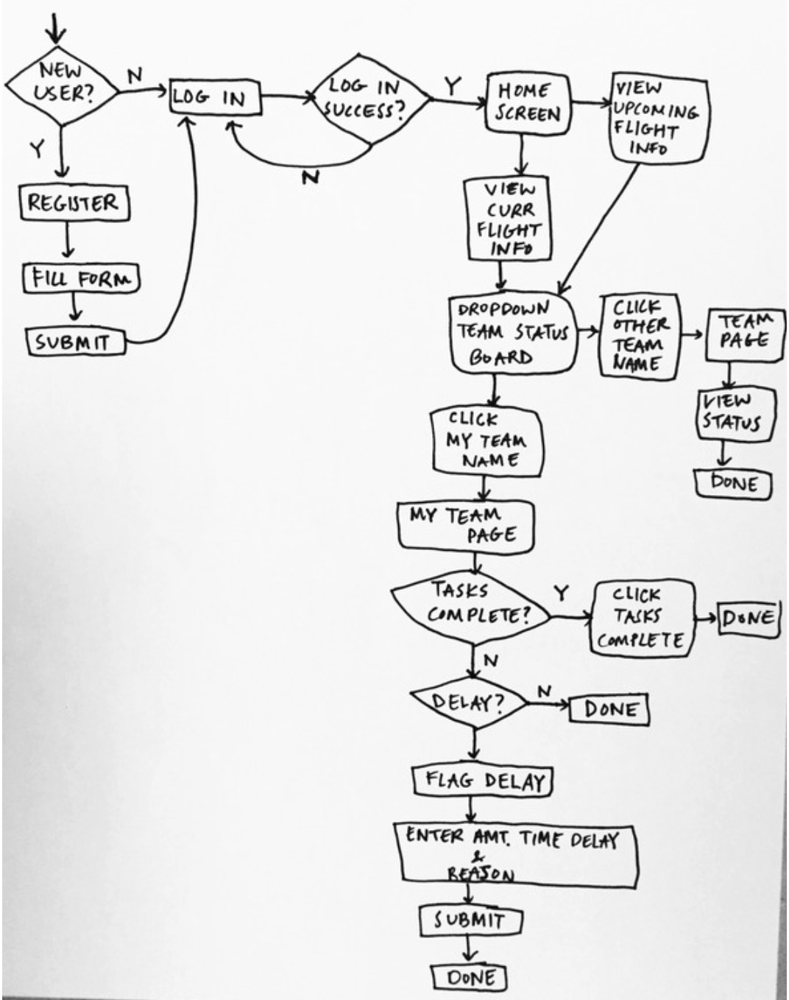
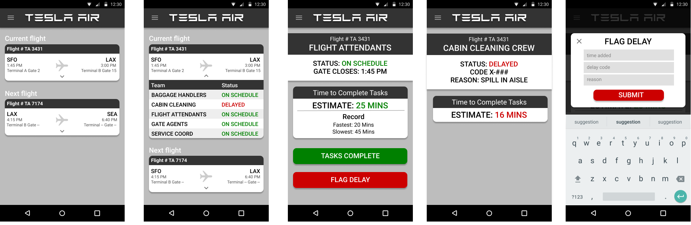

Tesla Air
UI/UX Design | Interaction Design
Ideas for a mobile app for "Tesla Air" airline employees to track turnaround delays. The application tracks how long it takes teams to complete tasks during the turnaround time for an aircraft. Airline teams may include flight attendants, baggage handlers, gate agents, etc. Ideally, the app would relay information about common issues between teams, giving employees a heads up into upcoming delays.
Initial Prototype Ver. 1
These are the first sketches I created, but I didn't end up going with this design for many reasons. One of the things scrapped was the progress bar that shows the turnaround progress of the plane. I realized that the progress bar wasn't practical since much of the events occurred simultaneously rather than chronologically, plus there was too much text on the home screen. Additionally, I also did not go with the design for the team page because I realized I focused too much on the team's specific tasks. For instance, if I was a flight attendant looking at the cabin cleaning crew's page, I wouldn't care whether they were wiping tray tables or vacuuming; I would only need to know if they were on schedule or not.
Initial Prototype Ver. 2
I ended up going with most of what I sketched out for the second version of the prototype. In this version, the home screen would show the current flight information and the next flight the employee would go to. Clicking on a flight would show a "status board" for all the teams working on that flight. The team page would show the team's current status, how long it would take them to complete their turnaround tasks, and if they were on their own page, options to mark the tasks as "complete" or to alert the other teams of a delay.
User Flow Diagram
Final Prototype Screens
Click here to see the final prototype on Figma.